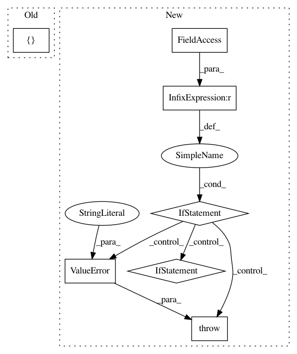

c69da5ec32a1af288c70af7c37e08f6a8a19fe82,tensornets/utils.py,,load_img,#,169
Before Change
hw_tuple = (target_size[1], target_size[0])
if img.shape[1::-1] != hw_tuple:
img = cv2.resize(img, hw_tuple, interpolation=interp)
img = np.array([img[:, :, ::-1]], dtype=np.float32)
if len(img.shape) == 3:
img = np.expand_dims(img, -1)
if crop_size is not None:
After Change
interp = cv2.INTER_CUBIC
if not isinstance(paths, list):
paths = [paths]
if len(paths) > 1 and (target_size is None or
isinstance(target_size, int)):
raise ValueError("A tuple `target_size` should be provided "
"when loading multiple images.")
def _load_img(path):
img = cv2.imread(path)
if target_size:
if isinstance(target_size, int):
hw_tuple = tuple([x * target_size // min(img.shape[:2])
for x in img.shape[1::-1]])
else:
hw_tuple = (target_size[1], target_size[0])
if img.shape[1::-1] != hw_tuple:
img = cv2.resize(img, hw_tuple, interpolation=interp)
img = img[:, :, ::-1]
if len(img.shape) == 2:
img = np.expand_dims(img, -1)
return img
if len(paths) > 1:
imgs = np.zeros((len(paths),) + target_size + (3,), dtype=np.float32)
for (i, path) in enumerate(paths):
imgs[i] = _load_img(path)
else:
imgs = np.array([_load_img(paths[0])], dtype=np.float32)
if crop_size is not None:
imgs = crop(imgs, crop_size)
return imgs
In pattern: SUPERPATTERN
Frequency: 3
Non-data size: 7
Instances
Project Name: taehoonlee/tensornets
Commit Name: c69da5ec32a1af288c70af7c37e08f6a8a19fe82
Time: 2018-03-31
Author: me@taehoonlee.com
File Name: tensornets/utils.py
Class Name:
Method Name: load_img
Project Name: craffel/mir_eval
Commit Name: 9a3cf7ff00c081ff394f62dceae1c3d8d199d9e4
Time: 2014-10-25
Author: brian.mcfee@nyu.edu
File Name: mir_eval/tempo.py
Class Name:
Method Name: validate
Project Name: pgmpy/pgmpy
Commit Name: eea41a4578b5021bbc16eb171bceb453cbde2419
Time: 2014-11-30
Author: abinash.panda.ece10@itbhu.ac.in
File Name: pgmpy/models/BayesianModel.py
Class Name: BayesianModel
Method Name: add_edge